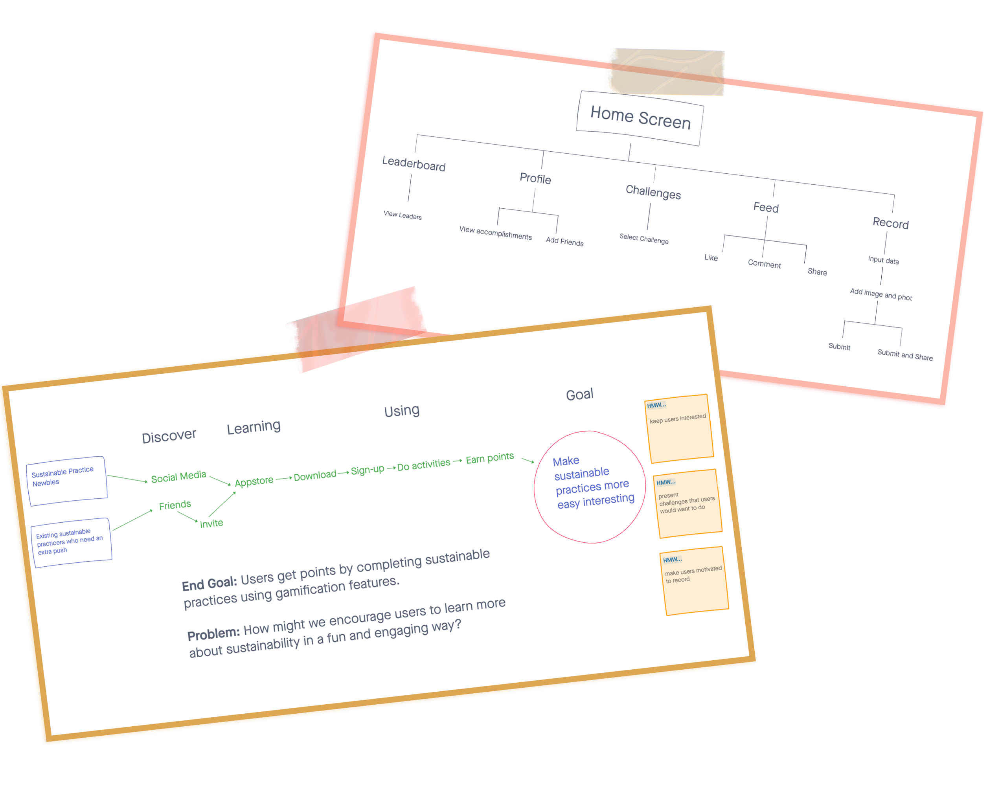
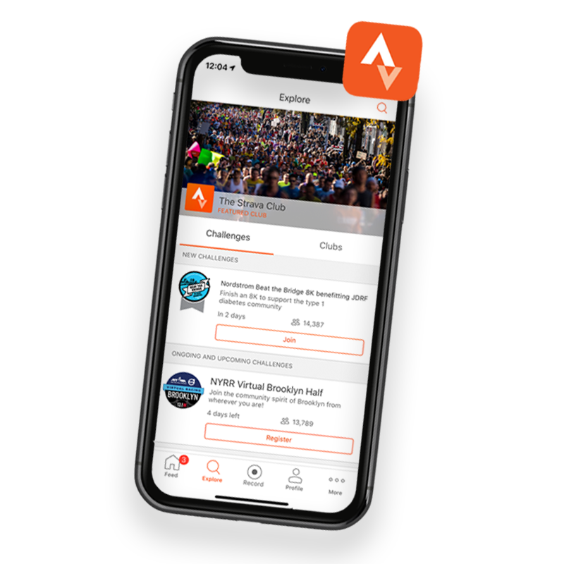
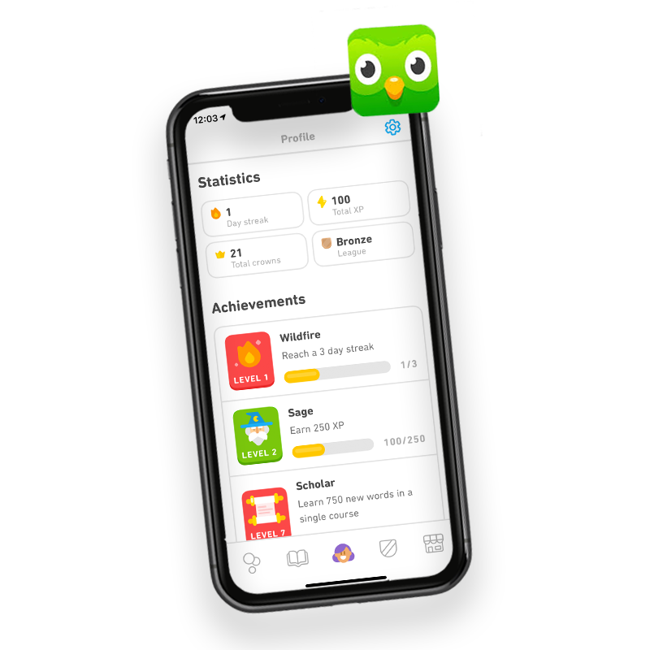
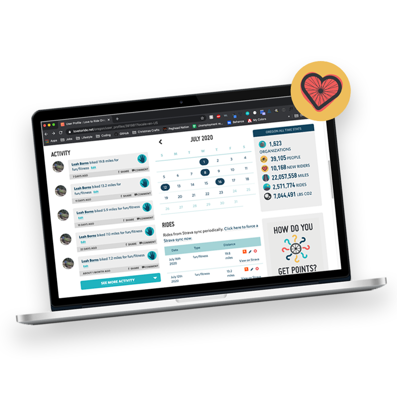
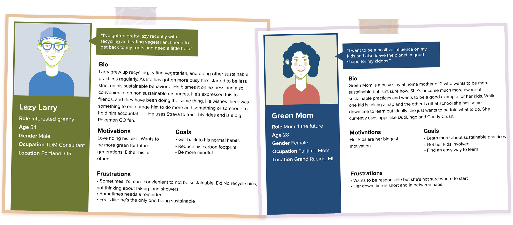
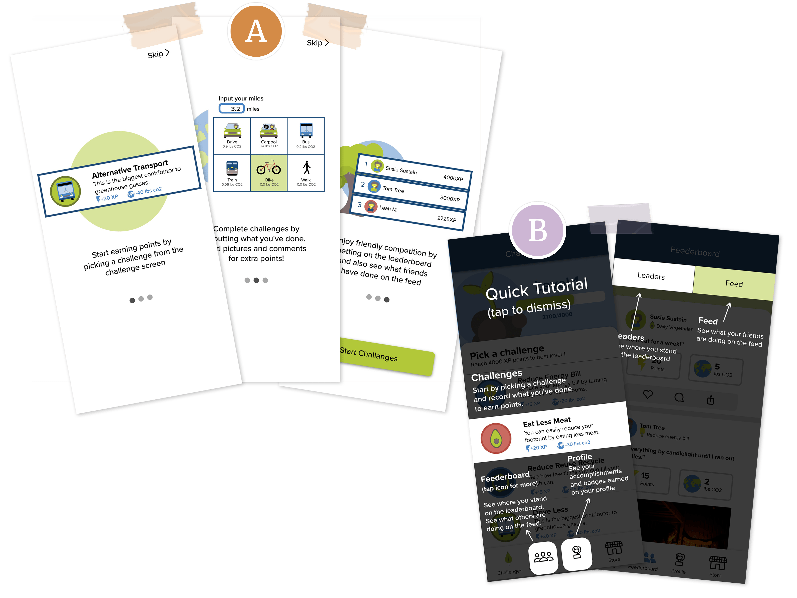
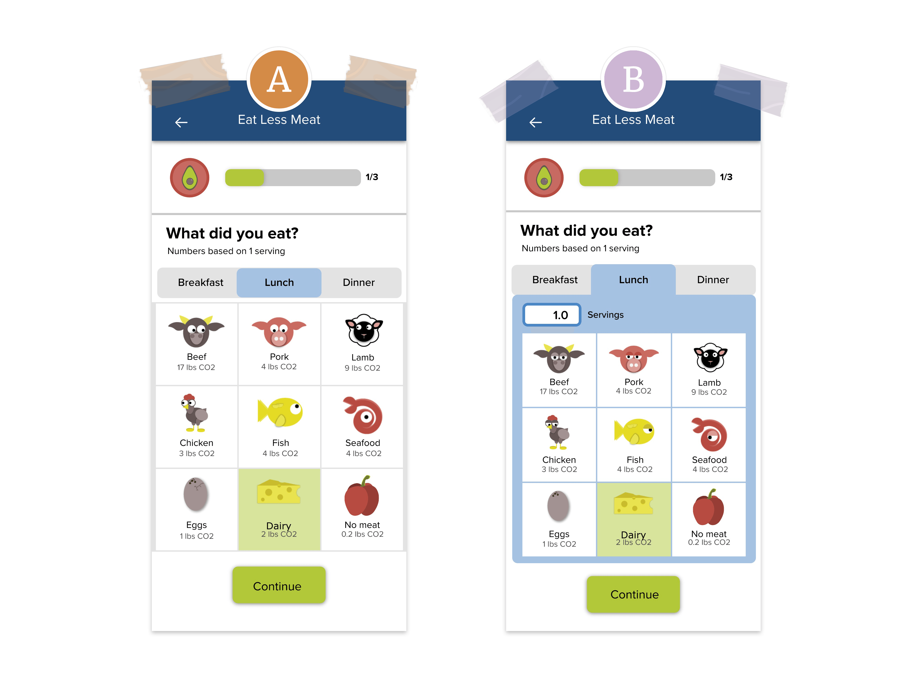

Bus Spot
Overview
Transit officials recently identified their riders need for clearer scheduling as bus lines expand to single bus stops. Through the design process, I developed an app called the Bus Spot, a scheduling app that allows users to visually locate their bus and set arrival/departure alerts to prevent riders running for the wrong bus.
The Problem
The problem here is twofold for the riders and the transit agency. Multiple bus routes have been added to a single stop and riders are getting frustrated as it’s become too hard to figure out what bus is coming. Many riders rush to the bus stop only to find it’s not their bus. The city has also recently developed a way to know how far each bus is from a stop. However, they haven’t found a way to share that information with their riders.
Users & Audience
This app is for users who have experienced an increase in the number of bus lines to their bus stops and have found it difficult to know when their bus is coming. Riders are tired of running to the bus stop only to find it’s the wrong bus.
Roles
I was the User Experience Designer. I conducted user research, created the personas, user flows, wireframes, prototypes and final user testing. I also collaborated with my mentor Becky for assistance along the way. She provided me with feedback from the Discover to the Deliver phases.
Scope & Constraints
We will use the Transit Agency’s data from tracking the bus distance from the stops with a live visual of where the bus is on a map. We will also provide the option for users to turn on alerts for when the bus is arriving and leaving a bus stop.
The bus stop at Washington & State has been having the most complaints from riders. We will only focus on that stop. We will also only focus on improving the scheduling part of the app as the trip planning functionality is working efficiently for most users.
The Solution
I have developed the Bus Spot, a scheduling app that allows users to track their bus with a live bus locator and an option to set arrival/departure alerts. User research showed that these features were highly desirable and could help solve the pain points in the current bus scheduling system. The transit agencies data would provide the back end functionality to make the live bus locator and real time bus alerts come to life. This in turn will give riders the information they need to make sure they are catching the right bus.

The Process
Discovery & Research
Competitive Analysis
Greener started as a big concept with many moving parts. To narrow in on the focus of this project I started the sprint by mapping out the problem and creating a flow chart. I wanted the app to focus on two users, sustainability newbies and those who already practice but need an extra push. The ultimate goal of the app would be to make sustainable practices more easy and interesting. The inital flow of the app was broken up into 5 different sections from the home screen. The app would need challenges and a recording screen to get users to do sustainable practices. It also needed an interactive aspect such as a leaderboard, profile and feed to keep users motivated through social influence.
User Survey
As part of the sprint I performed lightning demos to research and start brainstorming ideas for the app. I found that Strava, DuoLingo, and Love to Ride were all great examples of apps that encompass gamification.
Strava's feed is easy to navigate to quickly see what others have been up to. Users can choose from a variety of challenges. Each challenge had a list and a short description of each challenge which reduced an extra click on the challenge for additional information The profile allows users to see their stats from all of their activities as well as see who they are following and who is following them.
Duolingo is the epitome of gamifying apps. It has badges, levels, points, you name it. You can immediately start challenges on the opening screen. The information is simple and requires some assumptions of what each challenge is and what level you are on. More information would be helpful. The profile is clean with all of the users stats in an easily digestible way. The leaderboard is only accessible if you complete challenges for that day which is a great way to encourage users to do challenges. Duolingo also has daily notifications to remind you to ‘practice’. This feature is nice but it also gets annoying.
Love to Ride is a web platform that teams up companies to encourage their employees to ride their bikes to work. The profile has badges and overall stats of all rides. It’s very easy to navigate and the icons make it fun. There is a full history of your activity to compare from years past as well. Recording is really easy, especially since it’s linked up with Strava and the leaderboard is broken into different sections such as Top Commuters, Riders, Men, Woman and Kids so there can be more than one leader. The interface is very clean and easy to navigate.
Journey & Empathy
To get into the headspace of our users and answer the how of the user experience I created a journey and empathy map. Targeting the users and goals from the mapping exercise users want an easy and fun way to learn sustainable practices that are often mundane tasks.
The users journey starts by opening the app to the challenges screen where they can see what level they are on and complete challenges for points. By recording their challenges the user can see their accomplishments, including badges, challenges history and total amount of co2 reduced, on their profile. Users can see what their friends are doing on the feed where they can interact with their posts by liking, commenting or sharing as well as see where they stand on the leaderboard for some friendly socially influenced competition.

Personas
Through Journey Mapping and Empathy Maps I developed the target audience for Greener. From this I came up with two personas. One user is a busy Mom who wants to be more sustainable but isn’t sure how. She’s become much more aware of sustainable practices and wants to be a good example for her kids. While one kid is taking a nap and the other is off at school she has some downtime to learn but ideally she just wants to be told what to do. She uses apps like DuoLingo and Candy Crush. The other user grew up recycling, eating vegetarian, and doing other sustainable practices regularly. As life has gotten more busy he’s started to be less strict on his sustainable behaviors. Partially laziness and also convenience. He’s expressed this to friends, and they have been doing the same thing. He wishes there was something to encourage him to do more. He uses Strava to track his rides and is a big Pokemon GO fan.
Define
User Stories
User Flow
Once my user stories were in place I began building the user flow. This process took many iterations. I had a lot of scope creep in this phase. I was thinking that scheduling was also part of trip planning. With a few iterations I found a way to eliminate the creep and still be able to fulfill my user stories that were just focused on scheduling.
In a much more succinct flow the user can see bus details or set an alert for their bus directly from their home screen. The alerts complete with a pop up window letting the user know if their bus is arriving soon or leaving the bus stop. This feature will need to be configured from the back end with the Transit Agency’s data.
Wireframe Sketches
With the flow in motion I began sketching the first iteration of the Bus Spot. My first wireframe sketches had a lot of similarities to the Moovit and Transit app. The concept also wasn’t just for scheduling, it was for trip planning too. The opening screen had the option to find your destination but also had a screen for a live map and bus stops. The bus stops screen could be selected to find more bus stops near the user as well as the bus schedule. These first sketches had the normal trip planning walk through. “Choose your destination, add favorites, choose the best route, and a trip overview. As part of the scheduling the user could find more information from a link in the trip details where they could see other bus times and turn on arrival and departure alerts. All very complicated and a lot of scope creep.
I unfortunately didn’t realize the amount of scope creep in my initial layout so I developed these screens digitally with more details and used them for my first usability test.
Digital Wireframes
The digital wireframes were created using the solution sketches and further detailed using paper prototypes. No major changes were made at this time.
Visual Design
Color Palette
I wanted the color palette to feel fun, natural, and simple to reflect the aspects of the game and sustainability. The first round of colors included a sea foam green and darker blue however after implementing them into the design I realized that the colors clashed. Still focusing on the greens and blues I came up with another color palette with more complementary colors. The body of the app had a mix of a lighter and darker blue with a lighter and darker green for accents and buttons. This color palette also had a high contrast for those whose experience color blindness.
Topography
Similar to the color palette I wanted a simple font type that was also a web safe font. I first chose Ariel however after the first iteration changed it to Proxima Nova. I felt it was more simple and fit well with the images and icons in the app.

Logo Design and Proess
I started developing the name by coming up with a list of names related to games as well as sustainability. It turned out that most names with “Eco” were already used, as well as other sustainability related words including Virid. I also came across Greenie, which is someone who campaigns to protect the environment. I thought maybe this could have a negative connotation with some users. It did however remind me of conversations I’ve had in the past where people expressed wanting to be “More Green” or “Greener”. After an app store search, there were no search results for greener so I move ahead with that name.
With a name like “Greener”, the logo should probably be green. I played around with the two greens I used in the app as well as with simple shapes to match the images and icons in the app itself. After a few iterations I landed on a tree made of three arrows pointing up to signify leveling up.
Iterations
Prior to usability testing the visual design went through a couple bigger changes. The first iterations color palette clashed and there was no dominant color for clickable items. Some of the alignment and drop shadows also needed to be adjusted for better flow.
On the challenges screen I changed the layout to list form, similar to strava challenges to provide more information to the user. The recording screens first iteration included drop down menus, but I added segmented controls to prevent scrolling and it provided a cool visual. Finally due to confusion of where to start once users were in the app I added onboarding walk through screens so users knew what to do once in the app. I also started calling the Feed/Leaderboard the Feederboard for simplicity and users understood the screen more.
Prototyping & Testing
Usability Test
After making the above adjustments I tested usability with 3 participants. Similar to the screens I broke the tasks up into 4 parts. I wanted to see:
- If it was intuitive for a user to pick a challenge
- What steps the users took to Record
- How users interact with the Profile
- How users interact and navigate the Feederboard
After testing, the users averaged an 84% success rate.
There were three things that stood out.
1 user skipped the onboarding walk through and wasn’t sure where to start once in the game.
1 user didn’t notice the segmented tabs on the recording screen, and another clicked around before finding the tabs.
1 user didn’t notice the Leaders tab on the feederboard

Preference Tests
After testing I created two preference tests. The first was for the onboarding walk through screens and the second was a more tabbed version of the recording screen. Since one user skipped the onboarding walk through and also had trouble starting I created an overlay tutorial as an alternative. All users liked the overlay better with one user commenting “I’m more prone to skip tutorials like ‘A’”. In the overlay tutorial I also highlighted the tabs on the Feederboard screen to assist any other users who might not notice the tabs.
During testing, one user suggested a clearer connection between the information on the tabs and the tabs themselves. For the second preference test I updated the connection of the tabs. All users found ‘B’ to be much clearer.
Final Prototype
Through many iterations greener provides a way for users to learn about sustainability in a fun and engaging way. Through gamification features such as leaderboards and badges as well as social influence by way of the feed users can develop sustainable habits through the cue of the challenges and a reward for completing those challenges. From here I want to do further preference testing on features to see what users find more engaging, as well as find easier ways for users to record.

Conclusion
Growth and Outcomes
Greener has been an idea since 2015, so it’s been really cool to see this app come to life. It was a fun and interesting exercise to build the app as a sprint. As my first sprint it was a learning curve to walk through each step. I enjoyed the fast pace of getting ideas out however I would find myself getting stuck in the weeds as I navigated most of this project solo. Initial research and lightning demos helped me understand the concepts of gamification better. It’s a pretty cool learning tool. As a solo sprinter I wish I would have gotten more feedback earlier on and done more preference testing. With a bigger concept in mind I experienced scope creep which caused unnecessary work along the way. With a clearer vision of the app I’m excited to keep working and testing this concept.